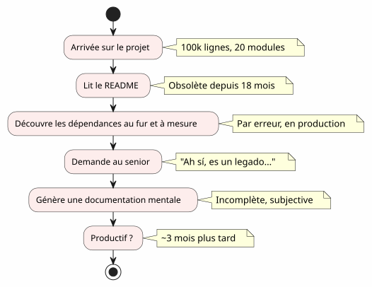
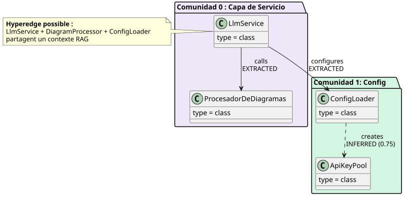
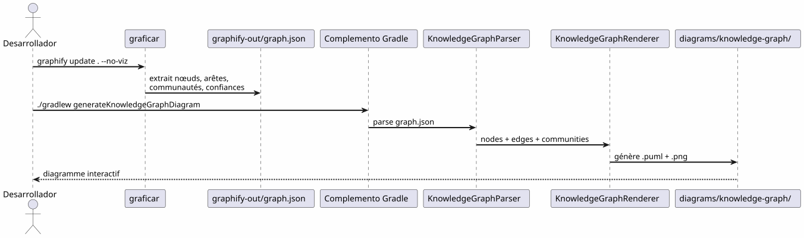
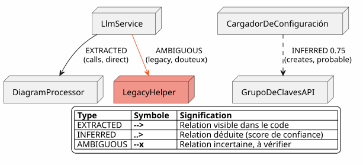
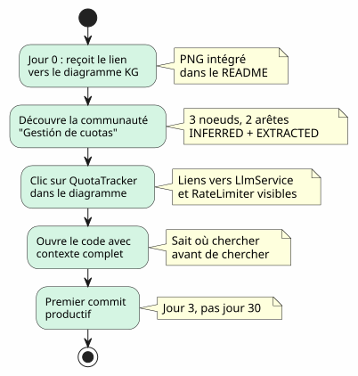

El Knowledge Graph como herramienta de comprensión de la base de código
Publié le 20 April 2027
- El muro de incorporación
- ¿Qué es un Knowledge Graph?
- Los 4 niveles de comprensión
- El contexto perdido: un escenario concreto
- Pipeline: código a la carta en un comando
- Tipos de aristas: lo que dice la confianza
- 5 minutos para generar tu propio Knowledge Graph
- Valor para onboarding: el escenario Anaís revisado
- Valor para la navegación diaria
- Límites y perspectivas
- Conclusión
Llegas a un proyecto de 100 000 líneas. Veinte módulos, cien clases, dependencias invisibles, un historial de refactorings olvidados. El README promete una arquitectura "microservices" pero el código cuenta otra cosa. ¿Cuánto tiempo para ser productivo?tres meses— si tienes suerte. ¿Y si un mapa interactivo del código, generado automáticamente, podría reducirlo a tres días?
- toc
-
[]
El muro de incorporación
Todo desarrollador ha vivido esta escena:
-
Día 1: te mostramos el README (última actualización: hace 18 meses)
-
Día 3: descubres que el módulo`billing`llama en secreto el módulo`notification`
-
Día 7 : un senior le dice "Ah sí, esta clase hace en realidad dos cosas, habíamos pensado en dividirla
-
Día 14: te das cuenta de que toda la inteligencia de negocio está en`utils/LegacyHelper.java`— un archivo que no se referencia en ningún lugar

El problema no es la falta de documentación — es elfalta de tarjeta. Una carta que muestra el territorio real, no el territorio imaginario del último rediseño.
¿Qué es un Knowledge Graph?
Un Knowledge Graph es una representación estructurada delsabercontenido en su codebase:
| Entidad | Ejemplo en el código | Rol en el grafo |
|---|---|---|
nudo |
Clase, función, concepto |
Vértice del grafo |
arista |
llamada, herencia, import |
Enlace entre dos nodos |
Comunidad |
Grupo de clases relacionadas |
Cluster visual |
Tipo de arista |
EXTRAÍDO, INFERIDO, AMBIGUO |
Confianza en la relación |
Puntuación de confianza |
0.0 à 1.0 |
Fiabilidad de una arista INFERRED |
hiperarista |
Relación 3+ nodos |
Complejidad arquitectónica |

¿La diferencia con un diagrama UML simple?Un diagrama UML muestra lo que el desarrollador decidió mostrar. Un Knowledge Graph muestra lo que realmente está ahí, incluyendo las dependencias ocultas y los conceptos emergentes.
Los 4 niveles de comprensión
Un Knowledge Graph permite de navegar acuatro escaleras:
| Nivel | pregunta | Granularidad | Herramienta |
|---|---|---|---|
1 — Clase |
¿Qué hace esta clase? |
Línea de código |
IDE, navegador |
2 — Módulo |
¿Cuáles son los archivos de este módulo? |
expediente |
|
3 — Comunidad |
¿Qué conceptos trabajan juntos? |
Grupo vinculado |
Knowledge Graph |
4 — Sistema |
¿Cómo se articula todo? |
Arquitectura global |
Diagrama KG completo |
Sin Knowledge Graph, los niveles 3 y 4 soninaccesibles— o al menos, subjetivos y obsoletos.
El contexto perdido: un escenario concreto
Imagina un nuevo desarrollador, Anaïs, que llega al proyecto. Debe agregar una funcionalidad de "quota tracking" para las llamadas LLM.
Failed to generate image: PlantUML preprocessing failed: [From <input> (line 19) ]
@startuml
skinparam backgroundColor #FEFEFE
skinparam componentStyle rectangle
actor "Anaís (nueva)" as ana
rectangle "Lo que ella busca" {
[QuotaTracker] as qt
[ApiKeyPool] as akp
[RateLimiter] as rl
}
rectangle "Lo que ella encuentra" {
[LlmService] as ls
[ConfigLoader] as cl
}
ana --> ls : "Busca 'quota'
en el IDE"
^^^^^
Syntax Error? (Assumed diagram type: component)
@startuml
skinparam backgroundColor #FEFEFE
skinparam componentStyle rectangle
actor "Anaís (nueva)" as ana
rectangle "Lo que ella busca" {
[QuotaTracker] as qt
[ApiKeyPool] as akp
[RateLimiter] as rl
}
rectangle "Lo que ella encuentra" {
[LlmService] as ls
[ConfigLoader] as cl
}
ana --> ls : "Busca 'quota'
en el IDE"
ls --> cl : "Encuentra ConfigLoader\n(menciona 'quota'\nen un comentario)"
cl --> qt : "3 semanas más tarde:\ndescubre QuotaTracker\nya existe"
note right of qt
**Contexte perdu :**
QuotaTracker était dans
un module non-référencé
dans le README
end note
@enduml
Con un Knowledge Graph, Anaïs habría visto en5 minutos:
-
QuotaTracker`está relacionado con`ApiKeyPool(bordeextraído) -
RateLimiter`está vinculado a`QuotaTracker(aristaINFERRED, confianza 0.82) -
Estos tres nodos forman unacomunidadGestión de cuotas
-
Un hyperedge también conecta`LlmService`— el punto de entrada
Pipeline: código a la carta en un comando
El pipeline Graphify + Plugin Gradle transforma tu base de código en un diagrama PlantUML endos órdenes:

Cero LLM.Todo es determinista: mismo código, mismo grafo, mismo diagrama. Reproducible, versionable, consultable sin conexión.
Tipos de aristas: lo que dice la confianza

Los tipos de aristas son cruciales para el onboarding :
-
EXTRACTED: puedas navegar con tranquilidad — está en el código
-
DEDUCIDO(0.6-0.8) : probablemente correcto, pero verifica antes de refactorizar
-
deducido(0.8+) : muy fiable — úsalo como referencia
-
ambiguo: atención, punto sensible. Pide a un senior.
5 minutos para generar tu propio Knowledge Graph

# 1. Installer graphify
pip install graphify==0.4.29
# 2. Générer le Knowledge Graph
graphify update . --no-viz
# 3. Vérifier le JSON
cat graphify-out/graph.json | jq '.nodes | length'
# → 47 nœuds
# 4. Générer le diagramme
./gradlew generateKnowledgeGraphDiagram
# 5. Filtrer par communauté
./gradlew generateKnowledgeGraphDiagram -Pplantuml.kg.community="service layer"
# 6. Limiter la taille
./gradlew generateKnowledgeGraphDiagram -Pplantuml.kg.maxNodes=20Valor para onboarding: el escenario Anaís revisado
Con el Knowledge Graph, el escenario de Anaïs cambia radicalmente:

El Knowledge Graph no reemplaza el IDE— lo completa. El IDE muestra dónde ; el KG muestra por qué y cómo se articula.
Valor para la navegación diaria
El onboarding no es el único caso de uso. Para un desarrollador senior, el Knowledge Graph sirve para :
Failed to generate image: PlantUML preprocessing failed: [From <input> (line 11) ]
@startuml
skinparam backgroundColor #FEFEFE
skinparam usecaseStyle roundrectangle
left to right direction
actor "Desarrollador" as dev
usecase "Reestructuración" as ref
usecase "Revista\nde arquitectura" as rev
usecase "Depuración
^^^^^
Syntax Error? (Assumed diagram type: component)
@startuml
skinparam backgroundColor #FEFEFE
skinparam usecaseStyle roundrectangle
left to right direction
actor "Desarrollador" as dev
usecase "Reestructuración" as ref
usecase "Revista\nde arquitectura" as rev
usecase "Depuración
dependencias" as dbg
usecase "Onboarding" as onb
usecase "Documentación
automáticamente generada" as doc
dev --> ref
dev --> rev
dev --> dbg
dev --> onb
dev --> doc
ref --> ("Identificar
los puntos calientes") : hyperedges\ndensité d'arêtes
rev --> ("Comprobar\nlas fronteras") : AMBIGUOUS\naux limites
dbg --> ("Traza\nlas llamadas") : EXTRACTED\nchaîne de calls
onb --> ("Explorar
las comunidades") : filtres\npar cluster
doc --> ("Generar
los diagramas") : ./gradlew\ngenerateKnowledgeGraphDiagram
@enduml
| Caso de uso | Cómo el KG ayuda | Ejemplo concreto |
|---|---|---|
Refactorización |
Visualiza los hiperaristas (ligaduras 3+) |
Estas 5 clases siempre están vinculadas — extraer un módulo |
Revisión de arquitectura |
Detecta los AMBIGUOUS en las fronteras |
La llamada entre billing y notification es incierta |
Depurar |
Traza la cadena EXTRACTED |
¿Por qué LlmService llama a LegacyHelper? |
Incorporación |
Explora las comunidades por filtro |
¿Qué es el 'service layer'? |
Documentación |
Genera los diagramas en CI |
README siempre actualizado |
Límites y perspectivas
Un Knowledge Graph no es una varita mágica :
| Límite | Explicación | Desvío |
|---|---|---|
Código estático únicamente |
Sin tiempo de ejecución, sin flujo de datos |
Completar con trazas APM |
INFERRED` puede ser falso |
Las aristas deducidas requieren validación |
Puntuación de confianza + revisión humana |
No semántica de negocio |
El KG sabe "LlmService llama a ConfigLoader", no "es el punto de entrada auth |
Anotaciones manuales o LLM post-procesamiento |
Sin temporalidad |
Una instantánea del código, no su evolución |
Generar regularmente + comparar las versiones |
Perspectivas :
-
Dif. KG: comparar dos versiones para ver los movimientos de comunidades
-
KG interactivo: clic en un nodo → apertura del IDE en la línea correspondiente
-
KG histórico: visualizar la evolución de las comunidades en el tiempo (deuda técnica que migra)
Conclusión
El Knowledge Graph transforma un actosolitario y largo(entender una codebase) en un actocompartido y rápido(consultar un mapa)
No es documentación — es de lacartografía. Un mapa que se actualiza automáticamente, que muestra el territorio real, y que permite a cada desarrollador, nuevo o senior, navegar con confianza.
pip install graphify==0.4.29
graphify update . --no-viz
./gradlew generateKnowledgeGraphDiagram3 comandos. 5 minutos. Un mapa de tu base de código.